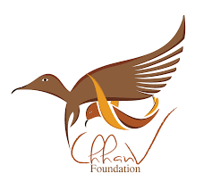

Atijeevan Society is registered under The Society Act, who has been fighting for empowerment and rehabilitation of acid attack survivors for more than 5 years now. The organization is even going to guide them with Medical and Legal Assistance with the help of Team of Professionals and Donors. The primary aim is to help them in this lifelong battle, by supporting their rehabilitation physically, mentally and economically.
Check out their website
Email ID atijeevanfoundation@gmail.com
Phone Number :- +91-9886714669
2. PCVC-International Foundation for Crime Prevention and Victim Care :-
The International Foundation for Crime Prevention and Victim Care (PCVC) was founded in 2001 in Chennai, Tamil Nadu to create and extend support services for women affected by domestic and interpersonal violence. Since the last 3 years, PCVC is regularly conducting projects where it provides free surgeries and face reconstruction support to about 100-200 survivors. They did a project in April and now, upcoming session is expected to be in July.
Do not worry regrarding their project schemes and timings. We are here to provide you that. Just keep checking our website for further updates.
Check out their website
Email ID info@pcvconline.org
Phone Number :- 18001027282 (Toll free), 9840888882 (Whatsapp)
3. CHAANV FOUNDATION:-

Chhanv Foundation is one the oldest foundations working on rehabilitation of Acid Attack Survivors. Bit it is only since last 2 years that it has started giving financial assistance and surgeries for survivors at minimal costs. It has collaborated with hospitals like Kailash Hospital, Max Hospital as well as Yatharth Hospitals. The surgical drive happens all round the year. We will keep you informed about that.
Check out their website
Phone Number :- +91 9717900302, +91-9958066951
4. MAKE LOVE NOT SCARS:-

Chhanv Foundation is one the oldest foundations working on rehabilitation of Acid Attack Survivors. Bit it is only since last 2 years that it has started giving financial assistance and surgeries for survivors at minimal costs. It has collaborated with hospitals like Kailash Hospital, Max Hospital as well as Yatharth Hospitals. The surgical drive happens all round the year. We will keep you informed about that.
Check out their website
Email ID info@makelovenotscars.org
Phone Number :- 011 4109 9859
5. ACID SURVIVORS SAAHAS FOUNDATION:-
.png "Company1")